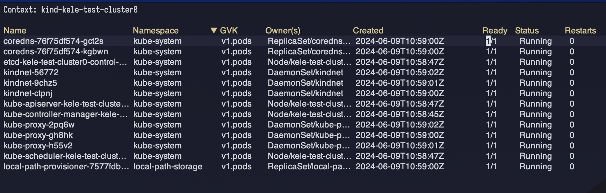
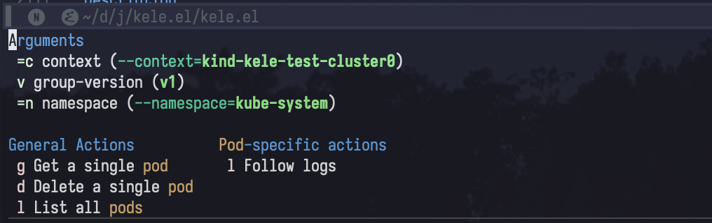
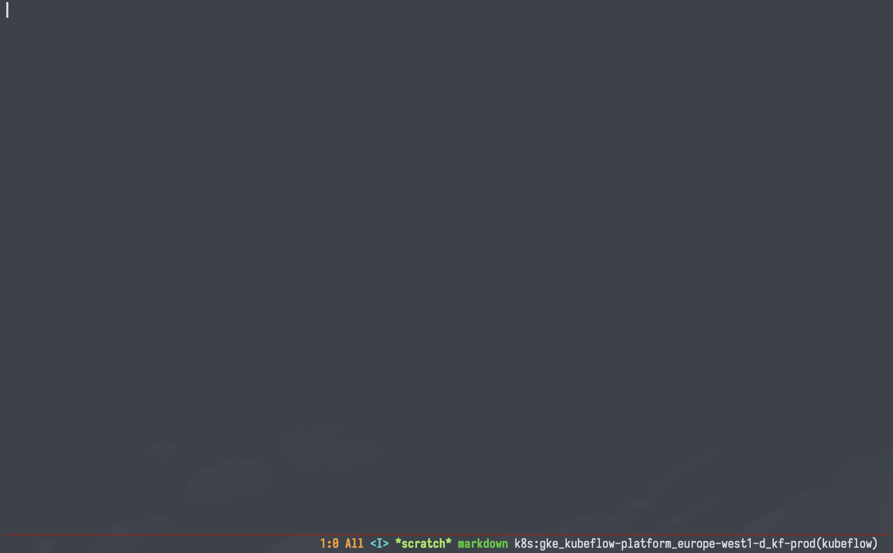

Usage
Note
You’ll notice this page is pretty sparse. Kele is an early-stage package with lots of room to grow. Stay tuned for more!
Note
Kele doesn’t have a default keybinding prefix for its commands. All examples
documented here assume that you’ve opted for s-k.
For instructions on how to set your own keybinding prefix, see: How-Tos > Customization.
Dispatch
| Keybinding | Interactive function |
|---|---|
s-k ? |
kele-dispatch |
Kele provides kele-dispatch as a launchpad for all subsequent Kele
functionality. If you ever forget what the keybinding is for what you’re trying
to accomplish, reach for kele-dispatch.
Working with Resources
s-k r will invoke kele-resource, allowing you to act on specific resource
kinds. With kele-resource, you can, for example:
- Look up a given Kubernetes object by name, fetch its manifest, and display it in a separate buffer;
- List out all resources of a given type.

kele-resource supports custom resources too!
Note
Individual bindings within kele-resource are enabled/disabled based on
your permissions in the given cluster. For example, if you do not have get
permission for the given resource, the g key will be disabled – likewise
the l key with list permission.
kele-resource will first prompt you to select the kind that you’d like to
work with, after which you can choose to get a specific object of that kind
by name. If the resource is namespaced, you will also be presented with the
option to choose the namespace to select from.
Certain resource kinds have actions unique to them. When you select a resource
kind that has such actions defined, these are presented in a dedicated section
with their own key bindings. For example, s-k r "deployments" will, in
addition to the general actions for getting and listing Deployments, also allow
you to restart a specific Deployment.
Getting a single resource
You can get a single resource of the given kind with:
s-k r <kind name> g <resource name>
This is bound to kele-get.
Tip
Leaving --namespace= unset will list all resources of the selected kind
across all namespaces for you to choose from.


Deleting a single resource
You can delete a single resource of the given kind with:
s-k r <kind name> d <resource name>
Listing all resources of a single kind
You can list all resources of a single kind with:
s-k r <kind name> l
This is bound to kele-list.

This will list all resources of the specified group-version and kind in a separate buffer in a table.
Info
Kele uses server-side
printing,
which means that any resource-specific columns that kubectl would print –
for example, the “Status” column for Pods – will be tabulated here as well.
From here, you can:
- Click any of the header columns to sort the list;
- Click or hit
RETon any of the entries to display its full manifest in a separate buffer; - Delete a resource with
k.
Tip
Leaving --namespace= unset will list resources across all namespaces.
Tip
Hitting RET with your cursor on the Owner(s) column will open the
owner resource.
Refreshing a resource
You can press g in a kele-get buffer to re-fetch and refresh the current resource.
Following logs
When kele-resource is called on a resource that supports logs, you can use the
l key to follow the logs for a single resource.

Contexts
Kele commands involving Kubernetes contexts center around the s-k c prefix (kele-config).
| Keybinding | Functionality | Interactive function | Demo |
|---|---|---|---|
s-k c s |
Switching from one context to another | kele-context-switch |
 |
s-k c r |
Renaming a context | kele-context-rename |
 |
s-k c d |
Deleting a context | kele-context-delete |
|
s-k c n |
Changing the default namespace | kele-namespace-switch-for-current-context |
Tip
Most context-related Kele functionality can also be done via Embark on any completion candidate in any context-related Kele command.
Tip
If you have functions that need to run after switching to a new context in
order to use it, kele-context-after-switch-functions is available to use. This
can be useful for, say, re-authenticating with the new context before
interacting with it.
Managing proxy servers
Kele allows for starting and stopping HTTP proxies for each context. The status of each context’s proxy is displayed in the annotations for each cluster completion candidate.
Demo
Note
Any proxy server created via Kele is ephemeral; they are automatically
closed and terminated after a set amount of time. For more details, see
kele-proxy-ttl.
Note
Each context can only have one proxy server active at a time. This is an artificial limitation put in place by Kele.
| Keybinding | Functionality | Interactive function |
|---|---|---|
s-k p p |
Start/stop proxy server process for the current context | kele-proxy-toggle |
s-k p P |
Start/stop proxy server process for a specific context | kele-proxy-toggle |